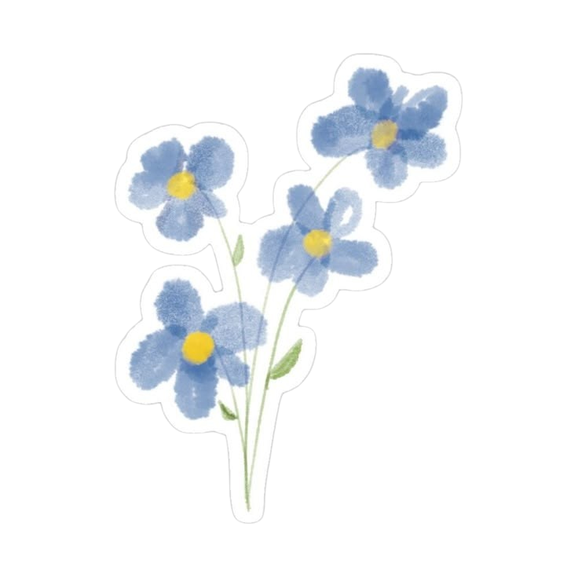
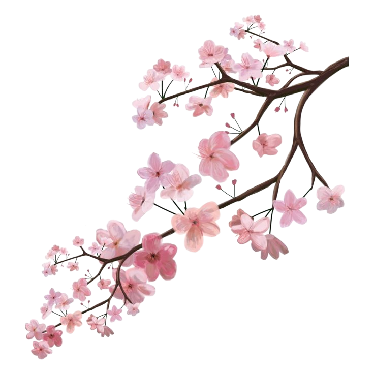
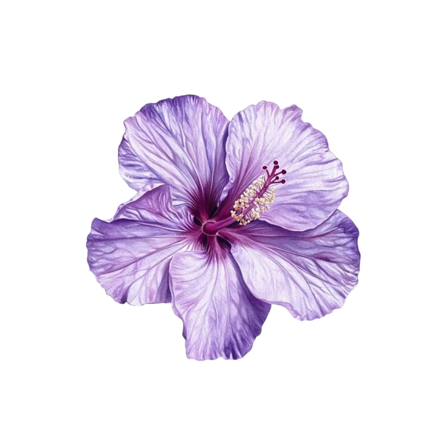
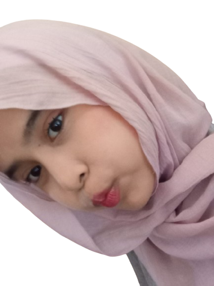

makasii yaa bocil
ucapan makasi sejutak, makasii uda jadi alasan kenapa banyak hari aku terasa lebih berarti yaa cil, makasi uda dateng ke hidup aku, makasi uda luangin waktu kamu yang SIBUK itu buat aku, makasi uda percaya aku, makasih juga karena kamu selalu berusaha, selalu bertahan, dan tetap jadi diri kamu sendiri. aku harap kamu tahu kalau keberadaan kamu itu berharga, dan kamu ga pernah sendirian selama masih ada aku di sini
makasii makasii makasiii sejutaak pokonyaa, sebenernya masi banyak yang kamu uda kasih ke aku, saking banyaknya aku gatau harus bilang makasi buat yang mana lagi, sebenernya makasih doang itu gacukup untuk semua hal baik yang kamu kasih ke aku jadi aku pengen ngebuat kamu bahagia,tetep disisi kamu, dan bisa jadi tempat buat kamu ngeluapin semua emosi kamu ke aku, lastt semoga aku masi dikasi kesempatan buat terus nemenin kamu di hari ulang tahun kamu di taun depan dan taun taun berikutnyaa yaa, dan satu hal yang akan selalu aku kasi tau ke kamu yaitu i'm always proud of u bocill
growing older, glowing softer cill
thank you for being you





